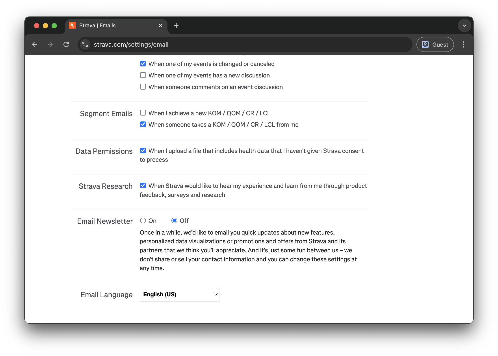
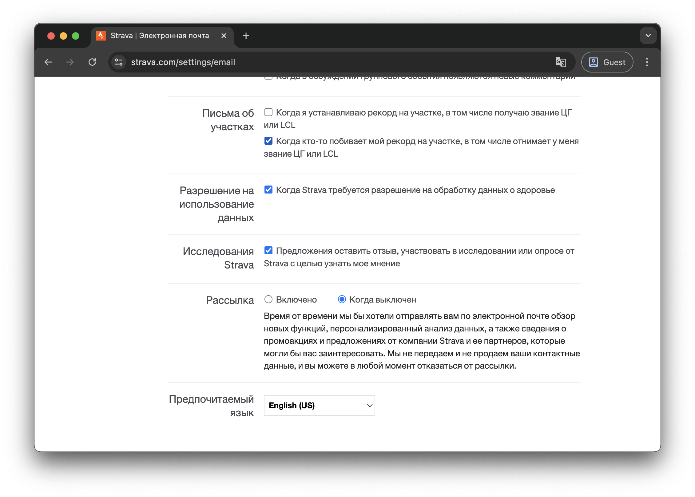

Ідея додати українську в Strava
20 травня 2023 року на порталі Strava Community Hub користувач Ihor створив ідею для додавання української мови в Strava додаток та сайт.
Please add Ukrainian to the app. At least for basic functions. After the outbreak of the war, the issue of language became very important for Ukrainians. Many Ukrainians have switched to their native language, and they would be very grateful to use Ukrainian instead of russian.З того часу, ідея набрала 1900 голосів та 740 коментарів. Це найбільш популярна ідея на порталі станом на листопад 2025 року.
Але команда Strava поки не поспішає її брати в роботу.
Як налаштувати Strava на англійську
Якщо ви знаєте англійську мову, налаштуйте Strava додаток та вебсайт на відображення цією мовою.
Для цього потрібно виконати три кроки:
- Змінити мову додатку (iOS, Android).
- Змінити мову веб-інтерфейсу.
- Змінити мову, яку Strava використовує для назв активностей.
1. Як змінити мову додатку
Як змінити мову в iOS
Спочатку додайте англійську мову по цій інструкції. Далі виконайте наступне:
- Відкрийте програму "Параметри" (Settings)
- Натисніть "Програми" (Apps).
- Виберіть додаток "Strava".
- У "Пріоритетна мова" (Prefferred Language) виберіть "English".
Важливо вибрати саме англійську. Якщо встановити українську, то Strava відображатиметься російською.
Як змінити мову в Android
Робимо по цій інструкції:
- Відкрийте додаток "Налаштування" (Settings)
- Натисніть "Система" (System) > "Мови" (Languages) > "Мови додатків" (App Languages).
- Виберіть додаток "Strava".
- Виберіть "English".
2. Як змінити мову веб-інтерфейсу
- Залогінитись в браузері з комп'ютера в Strava.
- Долистати вниз, у футері праворуч вибрати мову "English (US)" або "British English".
3. Як змінити мову, якою Strava називає активності
Щоб змінити мову, яку Strava використовує для автоматичних назв активностей, потрібно:
- Відкрити в браузері (обов'язково) "Settings - Email Notifications".
- Долистати донизу і вибрати "Email Language: English".
Ви все правильно зрозуміли: щоб змінити мову, яку Strava використовує для називання активностей, потрібно налаштувати мову листів. Це така особливість Strava.
Якщо Strava в браузері відображається російською
Щоб змінити мову наз активностей Strava з російської на англійську потрібно відкрити в браузері "Настройки - Уведомления по эл. почте", догортати донизу і вибрати "Предпочитаемый язык: English (US)".
Історія боротьби за українську мову в Strava
Переклад Strava українською - боротьба продовжується
Публікація в блозі про спроби перекласти Strava українською мовою.
Читати в блозі →Please add Ukrainian language in Strava
Користувач Ihor створив ідею на Strava Community Hub для додавання української мови.
Переглянути на Community Hub →Please add Ukrainian language in Strava
Дискусія на Reddit про додавання української мови в Strava.
Читати на Reddit →